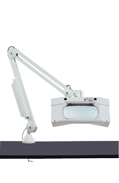
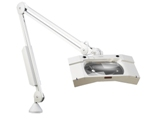
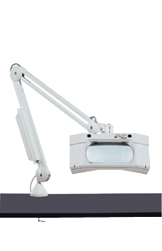
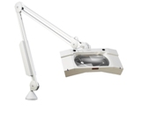

The large, rectangular viewing area of the glass lens enables comfortable viewing with both eyes
Unequalled for a large number of applications in industry, medicine and the beauty trade.
- Three-dimensional magnification with light coming from the left or right and shadow-free magnification with light coming from both sides
- Slim edge in front of the lens ensures that eye contact with the viewed object is not lost when switching from magnification to normal viewing and back again
- The neck joint between the head and arm moves in three planes: horizontally, vertically and laterally
- A specially coated ESD (electrostatic discharge) version is available for the electronics industry
- Available with anti-reflective coating on lens
- UV model ideal for the inspection of conformal coatings
- Colors available: Black, White or Light Grey - (please note: ESD and UV versions only available in Black)
- Uses two 13W compact fluorescents included
WAVE + Plus has received the Good Design Award from the Norwegian Design Council.
| Item # | Arm Reach | Bracket | Lens |
| 17845 | 45" | AH (bracket) | 3.5 diopter lens |
| 17846 | 30" | AH (bracket) | 3.5 diopter lens |
| 17847 | 30" | FE (base) | 3.5 diopter lens |
| 17841 | 45" | AH (bracket) | 3.5 diopter lens with A/R coating |
| 17842 | 30" | AH (bracket) | 3.5 diopter lens with A/R coating |
| 17843 | 30" | FE (base) | 3.5 diopter lens with A/R coating |
| 17900 | 45" | AH (bracket) | 3.5 diopter lens ESD with A/R coating |
| 17902 | 30" | AH (bracket) | 3.5 diopter lens ESD with A/R coating |
| 17904 | 30" | FE (base) | 3.5 diopter lens ESD with A/R coating |
| 17915BK | 45" | AH (bracket) | 3.5 diopter lens with UV lightsource |
| 17916BK | 30" | AH (bracket) | 3.5 diopter lens with UV lightsource |
| 17917BK | 30" | FE (base) | 3.5 diopter lens with UV lightsource |
Available Accessory Lenses (sold separately):
- 50074 - 4 Diopter Accessory Lens
- 50078 - 8 Diopter Accessory Lens
- 50206 - 10 Diopter Swing-Away Lens
| Magnification | ||||
| 1.85 X | 2.85 X | 3.85 X | 4.35 X | |
| Lens Diopter | 3.5 | 7.5 | 11.5 | 13.5 |
| Focal Length (inches) | 11 | 5.5 | 3.5 | 2.9 |
| Viewing Area (inches) | 6.75 | 4 | 3.125 | 1.5 |
| Lens Combination | ||||
| Primary | 3.5D | 3.5D | 3.5D | 3.5D |
| Secondary | - | 4D | 8D | 10D |